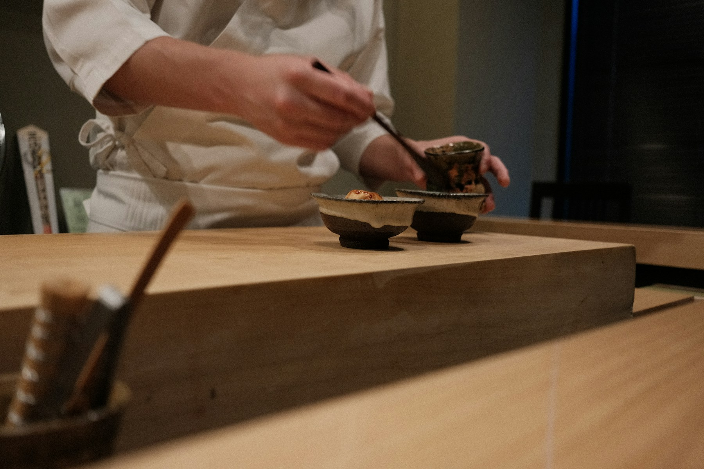
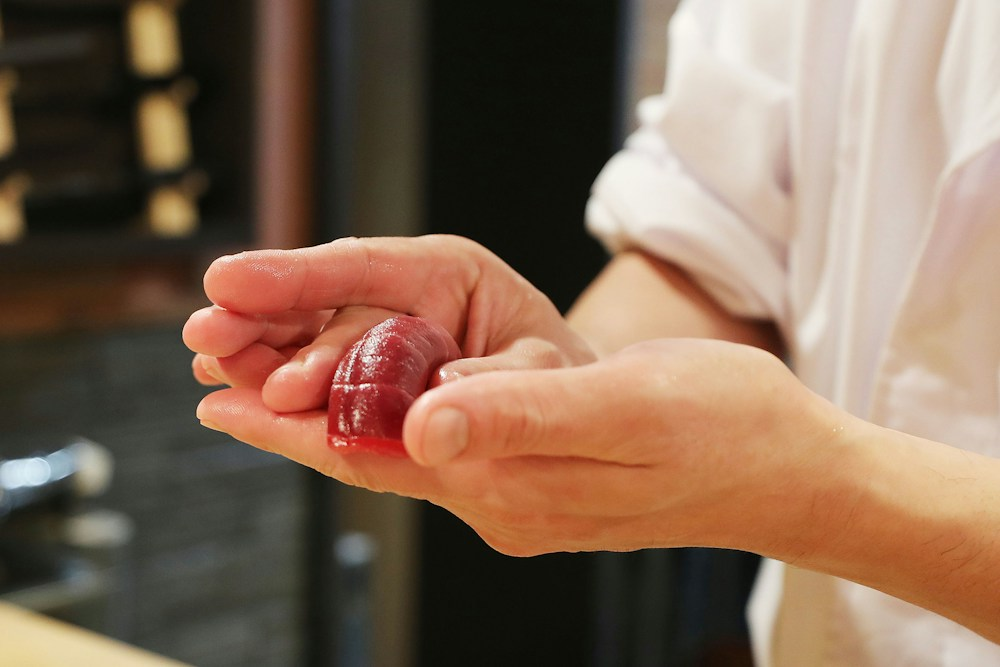
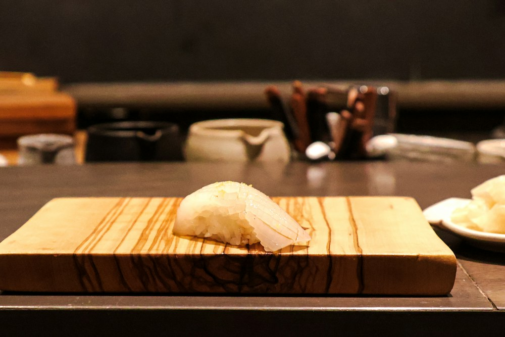
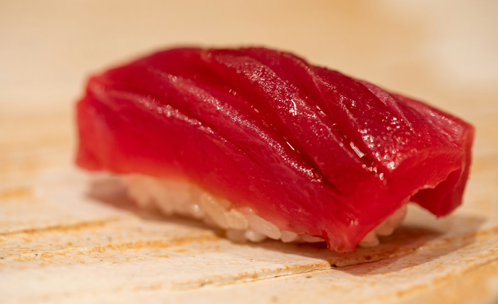
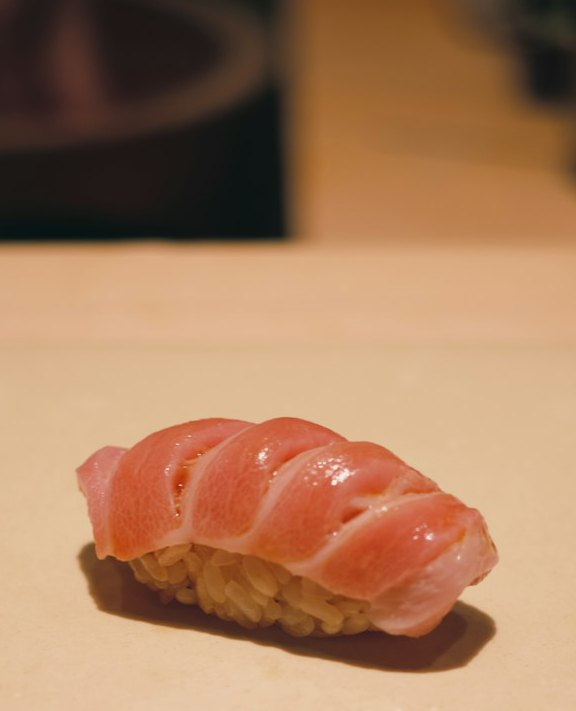
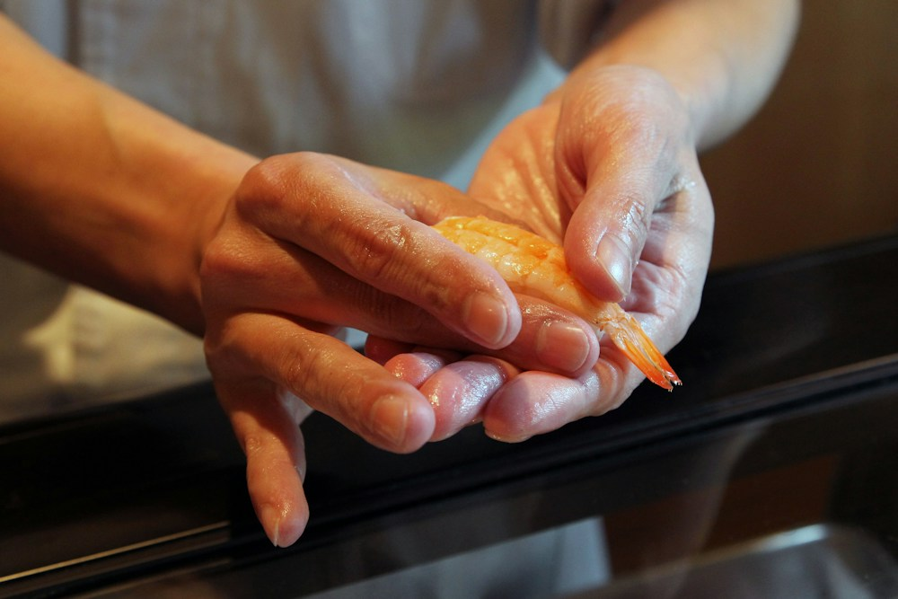
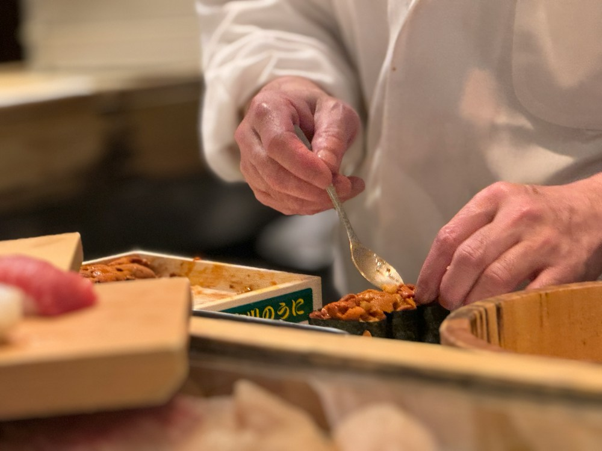
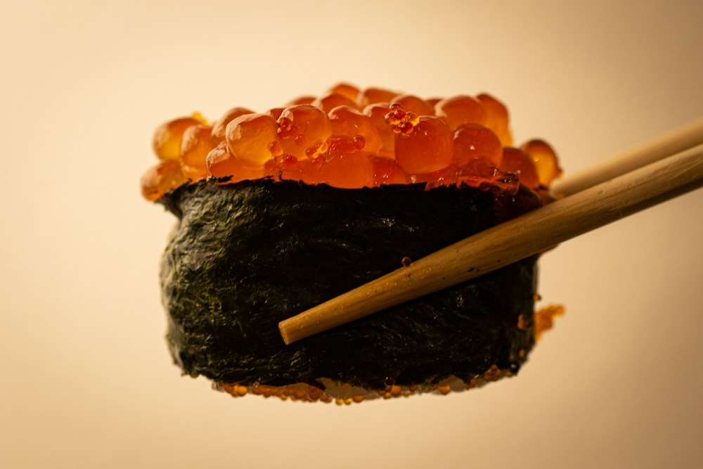
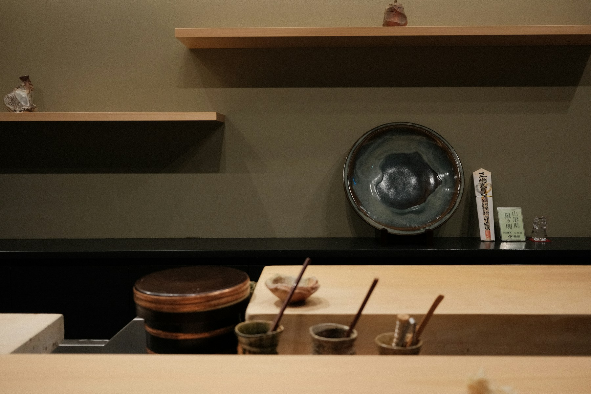

寝かせた魚に、赤酢のシャリ。
人形町、檜のカウンター十席。おまかせだけの店です。
昼6,600円 夜22,000円
シャリは赤酢。
魚は、ひと晩以上
寝かせてから。

赤酢のこと
酒粕から造る赤酢を二種、米酢を少し。砂糖は使いません。色は薄い茶色で、口に入れると先に酸、あとから甘みが来ます。脂ののった鮪や光り物に負けないシャリにしたくて、この配合に落ち着きました。炊き上がりは一日三回、温度が落ちる前に握ります。
寝かせること
締めたての魚は歯ごたえが立ちすぎる。平目は昆布で一晩、鮪は部位ごとに七日から十日。毎朝、身を切って色と香りを見てから、その日に出すかどうかを決めます。寝かせ足りない魚は、翌日に回します。
店主白井 檜一（架空の人物）
本日のネタ
十月二十三日の札から六枚。仕入れで毎日かわります。
- 平目青森 昆布締め

昆布で一晩。噛むほどに甘みが出ます。 - 赤身塩釜 漬け

醤油に十分だけ。表面に照りが残る程度に。 - 中とろ大間 十日

十日寝かせた背の中とろ。赤酢のシャリの色が分かります。 - 車海老天草 茹で

ご予約の時間に合わせて茹で、温かいまま握ります。 - 雲丹厚岸 生

箱から匙ですくって、その場で。 - いくら標津 醤油漬

秋だけの札。漬け地は毎週仕込み直します。
※写真は同じネタのイメージです。産地は架空の一例です。
昼と夜のおまかせ
献立は昼も夜もおまかせ一つずつ。苦手なネタはご予約のときに伺い、別の札に替えます。
昼のおまかせ
6,600円
税込・サービス料なし
- 内容
- 握り十貫、巻物、お椀
- 時間
- 十二時から一斉に始めます（約六十分）
- 曜日
- 水曜から土曜
夜のおまかせ
22,000円
税込・サービス料なし／お飲み物は別
- 内容
- つまみ六品、握り十二貫、玉子、お椀
- 時間
- 十七時半と二十時半の二回。それぞれ一斉に始めます（約二時間）
- お酒
- 日本酒は常時十種前後。赤酢に合わせて、燗をおすすめすることがあります
追加の握りは、その日の札から一貫ずつ承ります。

十席、ひとつの付け台。
一枚板の檜は、毎晩かんなをかけ直しています。どの席からも、握る手元まで見えます。
- お席
- カウンター十席のみ。四名様までは並びでご用意します
- お子様
- 小学生以上で、大人と同じおまかせを召し上がれる方
- お取り消し
- 前日は50％、当日は100％を頂戴します
- 香り
- 香りの強い香水・柔軟剤はお控えください
- 撮影
- お料理はご自由に。ほかのお客様と板場は写さないでください
ご予約
毎月一日の十時から、翌月末までの席を受け付けます。前日までのご予約で、苦手なネタを伺います。
お電話（十一時から十七時）03-0000-0000
ネットで空席を確かめる
※見本のため、予約画面は用意していません。電話番号も架空です。
アクセス
- 住所
- 東京都中央区日本橋人形町〇丁目〇-〇 一階（架空の住所）
- 最寄駅
- 人形町駅 A3出口から徒歩三分
- 営業
- 昼 12:00〜／夜 17:30〜・20:30〜
- 定休日
- 日曜・月曜、ほか月に二日